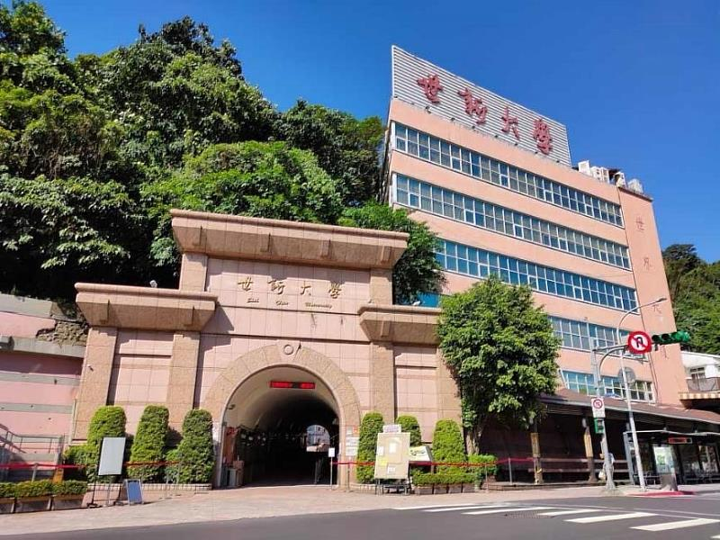
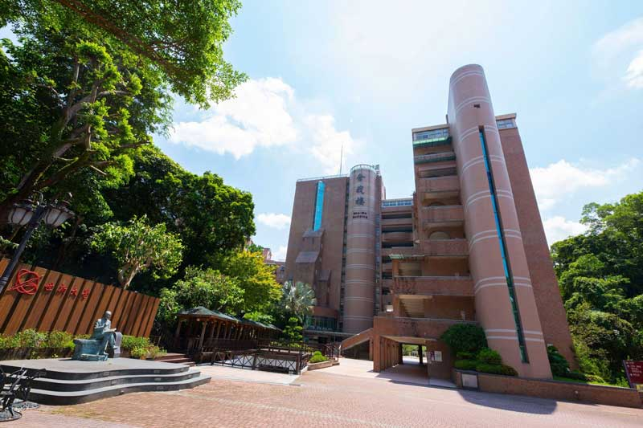

世新大學 亞洲夢工廠 全媒體全傳播
德智兼修，手腦並用 - 夢想從世新開始
世新大學創立於1956年，由新聞界泰斗成舍我先生創辦，是台灣第一所以傳播教育為特色的高等學府。 秉持「學校為學生而辦，學生為讀書而來」的辦學理念，世新大學致力培養品德與智慧並重、理論與實務合一的專業人才。 68年來，世新培育了無數傳播界菁英，在台灣媒體產業發展史上扮演重要角色，被譽為「亞洲夢工廠」。
世新大學特色
培育專業人才的教育典範
傳播教育領導品牌
台灣第一所傳播專業大學，培育無數傳播界菁英，業界實習機會豐富，與媒體產業緊密連結。 擁有完整的傳播教育體系，從新聞、廣電到數位媒體，涵蓋傳播產業各個領域。
理論實務並重
專業實習中心設備完善，產學合作機會多元，確保學生畢業即具備職場競爭力。 設有電視台、廣播電台、報社等實習媒體，提供學生真實的媒體工作環境。
自由民主校風
開放多元的學習環境，鼓勵獨立思考與批判，培養具有國際視野的現代公民。 承襲創辦人成舍我先生的新聞自由理念，培育具有社會責任感的媒體人才。
國際化視野
與國際知名大學建立合作關係，提供學生海外交換學習機會。 積極推動國際學術交流，培養學生全球化思維與跨文化溝通能力。
數位創新教學
引進最新科技設備，建置智能攝製基地，推動AI與傳播教育結合。 致力於數位轉型，培育適應未來媒體環境的專業人才。
卓越辦學成果
連續多年獲得教育部教學卓越計畫補助，辦學品質備受肯定。 校友遍布各大媒體機構，在台灣傳播產業具有重要影響力。
68
創校年數
11,000
在校學生
4
學院數量
19
學系數量


世新大學 - 亞洲夢工廠 全媒體全傳播
世新大學創立於1956年，由新聞界泰斗成舍我先生創辦，是台灣第一所以傳播教育為特色的高等學府。 秉持「德智兼修，手腦並用」的辦學理念，世新大學致力培養品德與智慧並重、理論與實務合一的專業人才。 透過這部影片，您將深入了解世新大學的校園環境、教學特色、學生生活以及豐富的學習資源。
68
創校年數
11,000
在校學生
4
學院數量
19
學系數量
更多世新影片
探索更多世新大學的精彩內容

世新大學校園導覽
帶您走訪世新大學美麗的校園，了解各項教學設施與學習環境。

新聞傳播學院介紹
深入了解台灣歷史最悠久的傳播學院，探索專業的教學設備與課程特色。

世新學生生活
體驗豐富多彩的校園生活，從社團活動到學術競賽，感受世新的青春活力。
加入世新大家庭
擁抱自由風氣與人文精神，在世新實現您的夢想